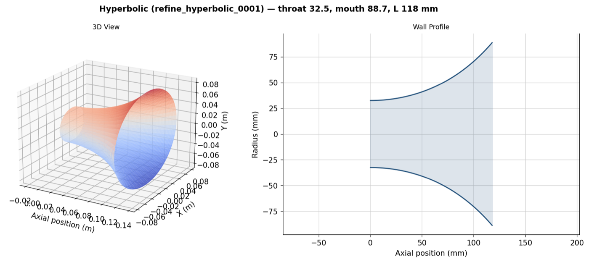
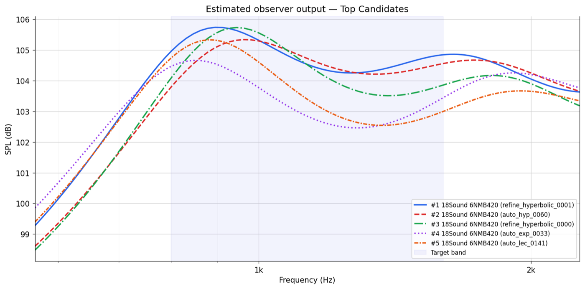
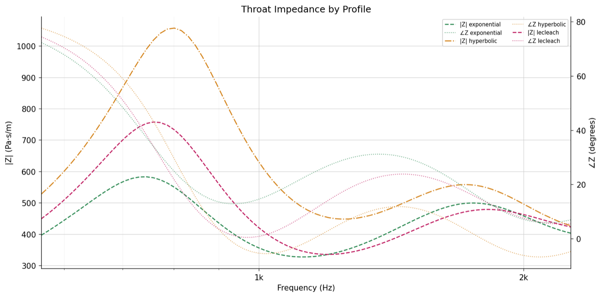
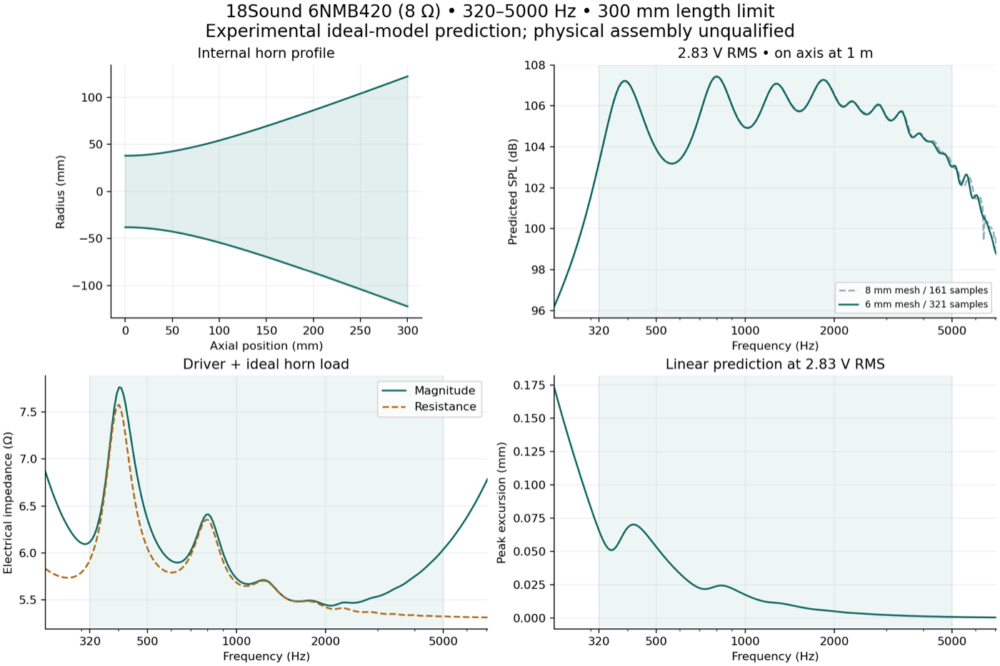

Horn Simulation
An open-source pipeline for designing horn-loaded loudspeakers. You give it a frequency band. It generates horn shapes, solves them with finite element acoustics, couples them to real drivers and ranks the results.
What it does
The pipeline takes a target band, for example 800 to 1600 Hz. It builds candidate horns from seven profile families: conical, exponential, hyperbolic, tractrix, oblate spheroid, Le Cléac'h and constant directivity.
A fast analytical screen (lumped-element and Webster models) cuts the candidates down. The shortlist is meshed with gmsh and solved with a FEniCSx Helmholtz solver. Each horn is then coupled to drivers from a database using their Thiele-Small parameters.
Every driver and horn pair is scored on bandwidth coverage, ripple and output. A short refinement step tries nearby dimensions. The result is a self-contained HTML report, a STEP file of the winning horn's air volume and the response data.
Nextflow runs the steps in Docker containers and solves frequency bands in parallel.
Example 1: 800 to 1600 Hz, automatic search
A small auto-mode run over a curated driver set. The analytical screen evaluated 189 horn candidates and scored 567 driver and horn pairs. Three went to FEM, plus two refinement trials. The winner is an 18Sound 6NMB420 cone driver on a short hyperbolic horn.


Ranking
All five finalists use the same driver. The top two are a near tie.
| # | Profile | Throat R (mm) | Mouth R (mm) | Length (mm) | Score | Ripple (dB) | Mean (dB) |
|---|---|---|---|---|---|---|---|
| 1 | Hyperbolic | 32.5 | 88.7 | 117.9 | 0.875 | 1.5 | 104.9 |
| 2 | Hyperbolic | 32.5 | 88.7 | 107.2 | 0.872 | 1.5 | 104.7 |
| 3 | Hyperbolic | 32.5 | 79.8 | 107.2 | 0.843 | 2.2 | 104.5 |
| 4 | Exponential | 32.5 | 88.7 | 107.2 | 0.839 | 2.2 | 103.4 |
| 5 | Le Cléac'h | 32.5 | 88.7 | 107.2 | 0.816 | 2.8 | 103.7 |

Open the full generated report (2.7 MB, self-contained) or browse the example files.
Example 2: 6NMB420, 320 to 5000 Hz, 300 mm length limit
A wider band with a hard length limit. The selected design is an oblate spheroid (OS) horn for the 8 ohm 18Sound 6NMB420. A broad 700-geometry search found nothing within the ripple limit. A focused 175-geometry search with a narrower throat did. In total, 15 geometries received full FEM sweeps.

Open the generated report or browse the example files, including the STEP file and response data.
Checked against measurement
The FEM horn model was compared with John Post's published 1994 measurements of an exponential horn's input impedance. The comparison limits were fixed before the solver ran. Nothing was fitted or shifted.
Over 1 ≤ ka ≤ 5 (about 201 to 1,007 Hz), the finest mesh is within 0.497 dB in magnitude and 1.873 degrees in phase of the measured curve. Both mesh refinement checks also passed.

Run it yourself
You need Docker, just, Nextflow and Java 17 to 22.
git clone https://github.com/timini/horn-simulation.git
cd horn-simulation
just build
# Give it only a band; it derives the geometry
just run-fullauto --target_f_low 500 --target_f_high 4000
# Find the run and open outputs/auto/report/auto_report.html inside it
just latest-runUse just run-auto to fix the dimensions you already know, such as a maximum length or mouth size. Use just run to simulate a single horn, either with explicit dimensions or your own STEP file. Each run gets its own directory with a manifest of the source, inputs and container hashes.